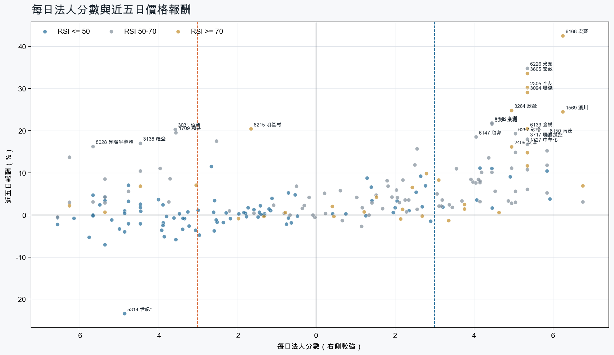
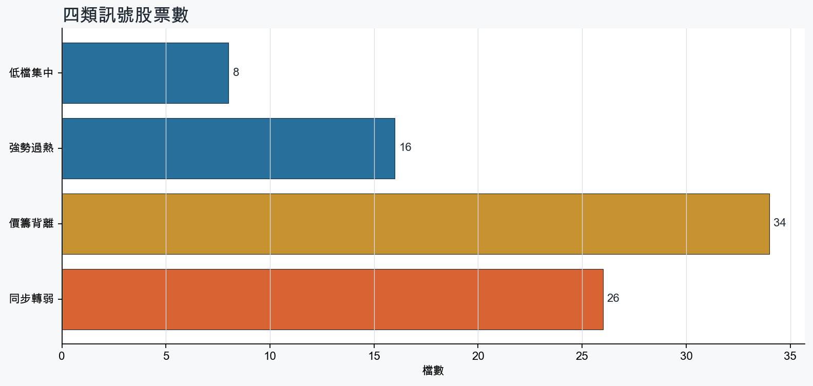
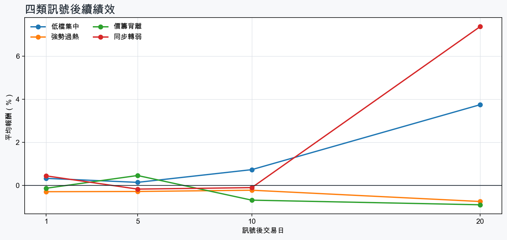

市場情緒偏多
近5日法人合計+280,264 張
篩選池上漲比例75.5%
籌碼好 / RSI低8 檔
籌碼差 / 價跌15 檔



EPS × PE VALUATION
法人常用的相對估值
顯示保守、基準與樂觀估值帶，不把單一數字包裝成精準目標價。
最新累計 EPS 依季數年化 × 同產業有效 P/E 的 Q25／中位數／Q75。排除本公司、非正 P/E，並以 1.5×IQR 排除離群值。估值帶是公開資料篩選值，不是法人目標價；未使用分析師預估 EPS。
MOOD × MONEY
情緒與籌碼雷達
熱度代表被討論程度；情緒分與法人方向分開計算。熱門不等於適合追價，樣本不足也不硬判多空。
| 股票 | 情緒 | 討論熱度 | 情緒 × 籌碼 | 情緒 × 基本面 |
|---|---|---|---|---|
| 2409 友達強勢過熱 | 情緒高漲 +78.4信心 100 | 1002 篇 / 114 留言 / 3 則新聞 | 情籌共振法人分 +5.0 | 基本面與情緒分歧基本面分 -0.8 |
| 8358 金居同步轉弱 | 中性分歧 -9.7信心 81 | 871 篇 / 55 留言 / 3 則新聞 | 高熱分歧法人分 -3.9 | 基本面與情緒分歧基本面分 +3.6 |
| 2324 仁寶同步轉弱 | 中性分歧 +0.0信心 67 | 821 篇 / 40 留言 / 3 則新聞 | 高熱分歧法人分 -6.1 | 基本面與情緒分歧基本面分 +3.0 |
| 6446 藥華藥同步轉弱 | 偏多 +23.2信心 57 | 681 篇 / 12 留言 / 3 則新聞 | 熱門但法人撤退法人分 -3.4 | 基本面與情緒共振基本面分 +3.6 |
| 6168 宏齊強勢過熱 | 情緒高漲 +60.5信心 60 | 651 篇 / 8 留言 / 3 則新聞 | 情籌共振法人分 +6.2 | 基本面與情緒共振基本面分 +1.2 |
| 3045 台灣大強勢過熱 | 偏空 -23.8信心 24 | 521 篇 / 6 留言 / 0 則新聞 | 法人布局、市場悲觀法人分 +3.8 | 基本面佳、情緒悲觀基本面分 +2.4 |
| 5314 世紀*同步轉弱 | 中性分歧 +0.0信心 30 | 470 篇 / 0 留言 / 3 則新聞 | 情籌混合法人分 -4.8 | 基本面與情緒分歧基本面分 +3.6 |
| 4958 臻鼎-KY同步轉弱 | 偏多 +29.7信心 30 | 470 篇 / 0 留言 / 3 則新聞 | 熱門但法人撤退法人分 -4.8 | 基本面與情緒共振基本面分 +3.0 |
| 3363 上詮同步轉弱 | 中性分歧 +0.0信心 30 | 470 篇 / 0 留言 / 3 則新聞 | 情籌混合法人分 -4.8 | 基本面與情緒分歧基本面分 -2.0 |
| 1709 和益價籌背離 | 中性分歧 +0.0信心 30 | 470 篇 / 0 留言 / 3 則新聞 | 情籌混合法人分 -3.5 | 基本面與情緒分歧基本面分 +3.6 |
| 8103 瀚荃價籌背離 | 中性分歧 +0.0信心 30 | 470 篇 / 0 留言 / 3 則新聞 | 情籌混合法人分 -6.2 | 基本面與情緒分歧基本面分 +3.6 |
| 3450 聯鈞價籌背離 | 偏多 +29.7信心 30 | 470 篇 / 0 留言 / 3 則新聞 | 熱門但法人撤退法人分 -4.8 | 基本面與情緒共振基本面分 +3.6 |
01
籌碼好 / RSI低
優先研究基本面；法人續買且價格止穩時，才適合分批觀察。
| 股票 / 確認狀態 | 每日法人分 | 浦男式近似 | 法人加速度 | RSI / 相對強弱 | 量價確認 | 融資融券 | 每週集保確認 | 基本面 | EPS × 同業 P/E 估值 | 情緒 / 情籌 | 近期消息 | 論壇討論 |
|---|---|---|---|---|---|---|---|---|---|---|---|---|
| 3105 穩懋可研究 · 100 分籌碼與價格確認，可列研究清單 | +5.8法人 +13,178 張 / 4 天 | 命中 · 88站上月線；中期均線偏多；法人籌碼偏多；留意法人買盤未加速、量能尚未確認 | -539 張近3日 +7,768 / 連續 -1 日 | 49.6相對大盤 +31.6% | 量比 0.74確認分 +2.2法人買盤減速 | -0.5%融資 -225 張 / 融券 +45 張 | +4.56 pp1000張 +4.85 pp | 單月營收年增 +30.6%；累計營收年增 +33.0%；2026 Q2 累計 EPS 3.56仍需觀察下一期財報延續性來源：公開資訊觀測站 | 基準 NT$ 192.7估值帶 128.2–323.5現價 490.5 · 高於估值帶 · 距基準 -60.7%2026 Q2 累計 EPS 3.56 → 年化 7.12半導體同業 P/E 18.01／27.06／45.43 · n=148 · 信心中等以 Q2 累計 EPS 年化，不等同分析師全年預估來源：TWSE／TPEx 每日本益比 | 中性分歧 +0.0熱度 47 / 信心 30情籌混合 | 3105 穩懋 - 拉回是買點，490 買一張，看好他到600 - 股市爆料同學會CMoney · 09/21今日漲停股｜合晶、穩懋、雙鴻領軍攻頂，半導體與AI封裝概念股強勢發燒0901｜豐雲學堂2026 年 09 月sinotrade.com.tw · 09/01 | 近期沒有明確提及本股的論壇樣本 |
| 2379 瑞昱等待確認 · 100 分籌碼有訊號，但價格尚未確認 | +5.9法人 +5,111 張 / 5 天 | 接近 · 75站上月線；法人籌碼偏多；法人買盤加速；留意中期均線未翻多、明顯弱於大盤 | +2,189 張近3日 +4,179 / 連續 +9 日 | 49.0相對大盤 -3.2% | 量比 1.22確認分 +3.720日線低於60日線；近20日弱於大盤 | -%融資 - 張 / 融券 - 張 | +0.06 pp1000張 -0.17 pp | 單月營收年增 +28.1%；累計營收年增 +15.0%；2026 Q2 累計 EPS 15.86仍需觀察下一期財報延續性來源：公開資訊觀測站 | 基準 NT$ 870.1估值帶 571.3–1,478現價 740.0 · 估值帶內 · 距基準 +17.6%2026 Q2 累計 EPS 15.86 → 年化 31.72半導體同業 P/E 18.01／27.43／46.59 · n=148 · 信心中等以 Q2 累計 EPS 年化，不等同分析師全年預估來源：TWSE／TPEx 每日本益比 | 中性分歧 +0.0熱度 40 / 信心 20情籌混合 | 【09/21券商評等報告彙整】瑞昱(2379) 今日僅1家券商發布績效評等報告，評價為中立，目標價為750元。CMoney投資網誌 · 09/21Factset 最新調查：瑞昱(2379-TW)EPS預估上修至31.91元，預估目標價為750元｜新聞快訊｜豐雲學堂sinotrade.com.tw · 09/20 | 近期沒有明確提及本股的論壇樣本 |
| 3265 台星科可研究 · 100 分籌碼與價格確認，可列研究清單 | +4.5法人 +1,986 張 / 3 天 | 命中 · 95站上月線；中期均線偏多；法人籌碼偏多 | +2,266 張近3日 +2,104 / 連續 +3 日 | 48.7相對大盤 +2.4% | 量比 1.30確認分 +5.7價格、量能與籌碼未見明顯弱項 | -2.5%融資 -87 張 / 融券 +16 張 | -0.84 pp1000張 -0.08 pp | 單月營收年增 +3.4%；累計營收年增 +16.5%；2026 Q2 累計 EPS 3.85仍需觀察下一期財報延續性來源：公開資訊觀測站 | 基準 NT$ 211.2估值帶 138.7–358.7現價 181.0 · 估值帶內 · 距基準 +16.7%2026 Q2 累計 EPS 3.85 → 年化 7.70半導體同業 P/E 18.01／27.43／46.59 · n=148 · 信心中等以 Q2 累計 EPS 年化，不等同分析師全年預估來源：TWSE／TPEx 每日本益比 | 樣本不足 +0.0熱度 0 / 信心 0情緒樣本不足 | 近期沒有通過股票語境篩選的新聞 | 近期沒有明確提及本股的論壇樣本 |
| 2408 南亞科等待確認 · 86 分籌碼有訊號，但價格尚未確認 | +4.9法人 +34,280 張 / 3 天 | 接近 · 75站上月線；中期均線偏多；法人籌碼偏多；留意明顯弱於大盤、量能異常 | +47,378 張近3日 +34,068 / 連續 -1 日 | 49.6相對大盤 -3.6% | 量比 0.54確認分 +2.2近20日弱於大盤；成交量不足 | -%融資 - 張 / 融券 - 張 | -2.03 pp1000張 -2.89 pp | 單月營收年增 +560.9%；累計營收年增 +638.2%；2026 Q2 累計 EPS 23.38仍需觀察下一期財報延續性來源：公開資訊觀測站 | 基準 NT$ 1,283估值帶 842.1–2,179現價 516.0 · 低於估值帶 · 距基準 +148.6%2026 Q2 累計 EPS 23.38 → 年化 46.76半導體同業 P/E 18.01／27.43／46.59 · n=148 · 信心中等以 Q2 累計 EPS 年化，不等同分析師全年預估來源：TWSE／TPEx 每日本益比 | 偏多 +29.7熱度 47 / 信心 30情籌共振 | 記憶體漲不停！Q3毛利率80％↑ 南亞科、華邦電拉回撿？法人估它年賺10股本 - 上市櫃旺得富理財網 · 09/212408 南亞科- 雖然是上周舊新聞但給各位當信心指標- 股市爆料同學會CMoney · 09/21 | 近期沒有明確提及本股的論壇樣本 |
| 6182 合晶可研究 · 82 分籌碼與價格確認，可列研究清單 | +4.2法人 +24,886 張 / 3 天 | 接近 · 79站上月線；法人籌碼偏多；法人買盤加速；留意中期均線未翻多、相對強度普通 | +1,005 張近3日 +14,226 / 連續 -1 日 | 48.9相對大盤 -2.1% | 量比 1.04確認分 +2.520日線低於60日線 | +1.4%融資 +894 張 / 融券 +168 張 | -2.52 pp1000張 -2.77 pp | 單月營收年增 +20.0%；累計營收年增 +11.7%；2026 Q2 累計 EPS 0.062026 Q2 累計營益率 2.3%來源：公開資訊觀測站 | 基準 NT$ 3.28估值帶 2.16–5.54現價 115.0 · 高於估值帶 · 距基準 -97.2%2026 Q2 累計 EPS 0.06 → 年化 0.12半導體同業 P/E 18.03／27.30／46.15 · n=149 · 信心中等以 Q2 累計 EPS 年化，不等同分析師全年預估來源：TWSE／TPEx 每日本益比 | 中性分歧 +0.0熱度 47 / 信心 30情籌混合 | 【0921台股盤前】台積電回神、創意飆漲停，資金重回電子科技，外資集中市場回補約略870 億元，RS動能策略鎖定宏致、聯傑、合晶｜豐雲學堂2026 年 09 月sinotrade.com.tw · 09/216182 合晶- 明天要上山了- 股市爆料同學會CMoney · 09/21 | 近期沒有明確提及本股的論壇樣本 |
| 1718 中纖等待確認 · 70 分籌碼有訊號，但價格尚未確認 | +3.2法人 +11,622 張 / 3 天 | 未命中 · 57站上月線；法人籌碼偏多；法人買盤加速；留意中期均線未翻多、明顯弱於大盤 | +6,655 張近3日 +10,419 / 連續 +1 日 | 43.1相對大盤 -6.6% | 量比 0.50確認分 -0.020日線低於60日線；近20日弱於大盤；成交量不足 | -%融資 - 張 / 融券 - 張 | +1.64 pp1000張 +1.77 pp | 單月營收年增 +4.4%；累計營收年增 +3.3%；2026 Q2 累計 EPS 0.46仍需觀察下一期財報延續性來源：公開資訊觀測站 | 基準 NT$ 18.19估值帶 12.33–23.33現價 10.75 · 低於估值帶 · 距基準 +69.2%2026 Q2 累計 EPS 0.46 → 年化 0.92化學工業同業 P/E 13.40／19.77／25.36 · n=32 · 信心中等以 Q2 累計 EPS 年化，不等同分析師全年預估來源：TWSE／TPEx 每日本益比 | 樣本不足 +0.0熱度 0 / 信心 0情緒樣本不足 | 近期沒有通過股票語境篩選的新聞 | 近期沒有明確提及本股的論壇樣本 |
| 2377 微星等待確認 · 70 分籌碼有訊號，但價格尚未確認 | +4.5法人 +5,518 張 / 4 天 | 接近 · 64站上月線；中期均線偏多；法人籌碼偏多；留意法人買盤未加速、相對強度普通 | -1,047 張近3日 +2,965 / 連續 +4 日 | 49.0相對大盤 -0.3% | 量比 0.61確認分 -0.5成交量不足；法人買盤減速 | -%融資 - 張 / 融券 - 張 | +1.71 pp1000張 +2.06 pp | 2026 Q2 累計 EPS 7.59單月營收年增 -6.1%；累計營收年增 -6.4%；2026 Q2 累計營益率 6.7%來源：公開資訊觀測站 | 基準 NT$ 251.2估值帶 189.4–363.6現價 153.0 · 低於估值帶 · 距基準 +64.2%2026 Q2 累計 EPS 7.59 → 年化 15.18電腦及週邊同業 P/E 12.48／16.55／23.95 · n=78 · 信心中等以 Q2 累計 EPS 年化，不等同分析師全年預估來源：TWSE／TPEx 每日本益比 | 樣本不足 +0.0熱度 28 / 信心 10情緒樣本不足 | 2377 微星 - 洗衣機又是1230開始演向下 - 股市爆料同學會CMoney · 09/21 | 近期沒有明確提及本股的論壇樣本 |
| 5425 台半等待確認 · 63 分籌碼有訊號，但價格尚未確認 | +4.1法人 +2,386 張 / 3 天 | 接近 · 68站上月線；法人籌碼偏多；買超具延續性；留意中期均線未翻多、法人買盤未加速 | -9,499 張近3日 -2,409 / 連續 +1 日 | 46.4相對大盤 +1.8% | 量比 0.22確認分 -1.920日線低於60日線；成交量不足；法人買盤減速 | +2.1%融資 +262 張 / 融券 -118 張 | +0.37 pp1000張 -0.92 pp | 單月營收年增 +22.4%；累計營收年增 +7.5%；2026 Q2 累計 EPS 1.52仍需觀察下一期財報延續性來源：公開資訊觀測站 | 基準 NT$ 82.26估值帶 54.75–141.6現價 93.30 · 估值帶內 · 距基準 -11.8%2026 Q2 累計 EPS 1.52 → 年化 3.04半導體同業 P/E 18.01／27.06／46.59 · n=148 · 信心中等以 Q2 累計 EPS 年化，不等同分析師全年預估來源：TWSE／TPEx 每日本益比 | 樣本不足 +0.0熱度 0 / 信心 0情緒樣本不足 | 近期沒有通過股票語境篩選的新聞 | 近期沒有明確提及本股的論壇樣本 |
02
籌碼好 / RSI高
趨勢強但不追價，等待量縮、RSI降溫或回測支撐。
| 股票 / 確認狀態 | 每日法人分 | 浦男式近似 | 法人加速度 | RSI / 相對強弱 | 量價確認 | 融資融券 | 每週集保確認 | 基本面 | EPS × 同業 P/E 估值 | 情緒 / 情籌 | 近期消息 | 論壇討論 |
|---|---|---|---|---|---|---|---|---|---|---|---|---|
| 3094 聯傑等待拉回 · 100 分等拉回，不追價 | +5.3法人 +4,251 張 / 4 天 | 命中 · 91站上月線；中期均線偏多；法人籌碼偏多；留意量能尚未確認、動能位置非最佳 | +3,613 張近3日 +4,543 / 連續 +4 日 | 74.0相對大盤 +42.9% | 量比 0.82確認分 +5.8價格、量能與籌碼未見明顯弱項 | -%融資 - 張 / 融券 - 張 | +8.22 pp1000張 +3.50 pp | 單月營收年增 +30.2%；累計營收年增 +17.1%；2026 Q2 累計 EPS 0.39仍需觀察下一期財報延續性來源：公開資訊觀測站 | 基準 NT$ 21.11估值帶 14.05–35.44現價 56.80 · 高於估值帶 · 距基準 -62.8%2026 Q2 累計 EPS 0.39 → 年化 0.78半導體同業 P/E 18.01／27.06／45.43 · n=148 · 信心中等以 Q2 累計 EPS 年化，不等同分析師全年預估來源：TWSE／TPEx 每日本益比 | 中性分歧 +0.0熱度 47 / 信心 30情籌混合 | 【0921台股盤後】台積電、聯發科領軍台股再創波段高點；唯地緣政治與油價變化仍為隱憂，主力追漲策略鎖定豪勉、聯傑、華經｜豐雲學堂2026 年 09 月sinotrade.com.tw · 09/21台積電、聯發科領軍台股再創波段高點；唯地緣政治與油價變化仍為隱憂，主力追漲策略鎖定豪勉、聯傑、華經｜ 2026.09.22 #台股盤前解析｜今天 Shot 這盤｜豐雲學堂直播｜豐雲學堂2026 年 09 月sinotrade.com.tw · 09/21 | 近期沒有明確提及本股的論壇樣本 |
| 3264 欣銓等待拉回 · 100 分等拉回，不追價 | +5.0法人 +7,801 張 / 3 天 | 命中 · 91站上月線；中期均線偏多；法人籌碼偏多；留意量能尚未確認、動能位置非最佳 | +10,850 張近3日 +9,302 / 連續 +3 日 | 70.9相對大盤 +31.6% | 量比 2.82確認分 +5.2融資單日增幅偏高 | +25.7%融資 +1,599 張 / 融券 -31 張 | +2.62 pp1000張 +2.80 pp | 單月營收年增 +46.6%；累計營收年增 +33.9%；2026 Q2 累計 EPS 4.39仍需觀察下一期財報延續性來源：公開資訊觀測站 | 基準 NT$ 237.6估值帶 158.1–409.1現價 284.0 · 估值帶內 · 距基準 -16.3%2026 Q2 累計 EPS 4.39 → 年化 8.78半導體同業 P/E 18.01／27.06／46.59 · n=148 · 信心中等以 Q2 累計 EPS 年化，不等同分析師全年預估來源：TWSE／TPEx 每日本益比 | 偏多 +29.7熱度 47 / 信心 30情籌共振 | 【13:09 即時新聞】欣銓(3264)盤中續強，AI高階測試題材成焦點CMoney投資網誌 · 09/21欣銓(3264)第三季成長門檻曝光！AI ASIC需求強，9月營收只要超過14億元，第三季可望達成雙位數季增優分析UAnalyze · 09/21 | 近期沒有明確提及本股的論壇樣本 |
| 6168 宏齊等待拉回 · 100 分等拉回，不追價 | +6.2法人 +11,199 張 / 5 天 | 接近 · 86站上月線；中期均線偏多；法人籌碼偏多；留意RSI過熱 | +3,941 張近3日 +8,451 / 連續 +7 日 | 88.3相對大盤 +50.7% | 量比 1.21確認分 +6.5價格、量能與籌碼未見明顯弱項 | -%融資 - 張 / 融券 - 張 | +6.25 pp1000張 +5.41 pp | 單月營收年增 +18.5%；累計營收年增 +9.3%；2026 Q2 累計 EPS 0.172026 Q2 累計營益率 -0.4%來源：公開資訊觀測站 | 基準 NT$ 7.80估值帶 4.35–12.93現價 42.70 · 高於估值帶 · 距基準 -81.7%2026 Q2 累計 EPS 0.17 → 年化 0.34光電同業 P/E 12.80／22.93／38.03 · n=69 · 信心中等以 Q2 累計 EPS 年化，不等同分析師全年預估來源：TWSE／TPEx 每日本益比 | 情緒高漲 +60.5熱度 65 / 信心 60情籌共振 | 宏齊獲利／自結8月稅後純益400萬元、年減62% EPS 0.02元udn.com · 09/212303 聯電 - 宏齊連拉三根漲停股價創近16年新高- 股市爆料同學會CMoney · 09/21 | [情報] 6168 宏齊 8月自結:0.02 連4漲停中PTT Stock · 09-21 · 8 留言 |
| 6133 金橋等待拉回 · 100 分等拉回，不追價 | +5.3法人 +4,440 張 / 4 天 | 接近 · 86站上月線；中期均線偏多；法人籌碼偏多；留意量能異常、動能位置非最佳 | +4,056 張近3日 +4,288 / 連續 +4 日 | 71.4相對大盤 +18.4% | 量比 3.76確認分 +5.3價格、量能與籌碼未見明顯弱項 | -%融資 - 張 / 融券 - 張 | +3.32 pp1000張 +0.00 pp | 單月營收年增 +2.2%；累計營收年增 +6.7%；2026 Q2 累計 EPS 0.50仍需觀察下一期財報延續性來源：公開資訊觀測站 | 基準 NT$ 26.35估值帶 17.97–44.47現價 28.00 · 估值帶內 · 距基準 -5.9%2026 Q2 累計 EPS 0.50 → 年化 1.00電子零組件同業 P/E 17.97／26.35／44.47 · n=149 · 信心中等以 Q2 累計 EPS 年化，不等同分析師全年預估來源：TWSE／TPEx 每日本益比 | 樣本不足 +0.0熱度 0 / 信心 0情緒樣本不足 | 近期沒有通過股票語境篩選的新聞 | 近期沒有明確提及本股的論壇樣本 |
| 2363 矽統等待拉回 · 100 分等拉回，不追價 | +5.3法人 +7,556 張 / 4 天 | 接近 · 81站上月線；法人籌碼偏多；法人買盤加速；留意中期均線未翻多、量能尚未確認 | +4,299 張近3日 +6,683 / 連續 +4 日 | 71.2相對大盤 +10.0% | 量比 2.54確認分 +5.820日線低於60日線 | -%融資 - 張 / 融券 - 張 | -0.23 pp1000張 +0.01 pp | 單月營收年增 +81.1%；累計營收年增 +92.6%；2026 Q2 累計 EPS 0.202026 Q2 累計營益率 5.5%來源：公開資訊觀測站 | 基準 NT$ 10.82估值帶 7.20–18.17現價 59.00 · 高於估值帶 · 距基準 -81.7%2026 Q2 累計 EPS 0.20 → 年化 0.40半導體同業 P/E 18.01／27.06／45.43 · n=148 · 信心中等以 Q2 累計 EPS 年化，不等同分析師全年預估來源：TWSE／TPEx 每日本益比 | 偏多 +29.7熱度 47 / 信心 30情籌共振 | 蔚華科(3055)、矽統(2363)內部人加碼發動怎麼看？｜大戶投策略選股｜內部人加碼發動股｜豐雲學堂2026 年 09 月sinotrade.com.tw · 09/212363 矽統- 一漲停，一堆妖魔鬼怪都跑出來了- 股市爆料同學會CMoney · 09/21 | 近期沒有明確提及本股的論壇樣本 |
| 3014 聯陽等待拉回 · 100 分等拉回，不追價 | +6.8法人 +2,018 張 / 5 天 | 接近 · 71站上月線；法人籌碼偏多；法人買盤加速；留意中期均線未翻多、量能異常 | +692 張近3日 +1,468 / 連續 +9 日 | 75.0相對大盤 +1.1% | 量比 4.63確認分 +3.620日線低於60日線 | -%融資 - 張 / 融券 - 張 | +0.57 pp1000張 +1.18 pp | 單月營收年增 +5.3%；累計營收年增 +0.2%；2026 Q2 累計 EPS 5.88仍需觀察下一期財報延續性來源：公開資訊觀測站 | 基準 NT$ 322.6估值帶 214.6–547.9現價 139.5 · 低於估值帶 · 距基準 +131.2%2026 Q2 累計 EPS 5.88 → 年化 11.76半導體同業 P/E 18.25／27.43／46.59 · n=148 · 信心中等以 Q2 累計 EPS 年化，不等同分析師全年預估來源：TWSE／TPEx 每日本益比 | 中性分歧 +0.0熱度 40 / 信心 20情籌混合 | 3014 聯陽 - 外資+596連9買，投信+50連13買，自營商+33連6買，... - 股市爆料同學會CMoney · 09/213014 聯陽 - 全力買進 - 股市爆料同學會CMoney · 09/21 | 近期沒有明確提及本股的論壇樣本 |
| 2305 全友等待拉回 · 100 分等拉回，不追價 | +5.3法人 +7,544 張 / 4 天 | 接近 · 80站上月線；中期均線偏多；法人籌碼偏多；留意量能異常、RSI過熱 | +3 張近3日 +4,147 / 連續 +4 日 | 98.7相對大盤 +114.0% | 量比 0.51確認分 +3.2成交量不足 | -%融資 - 張 / 融券 - 張 | +5.10 pp1000張 +3.47 pp | 單月營收年增 +240.0%；累計營收年增 +113.2%；2026 Q2 累計 EPS 0.51仍需觀察下一期財報延續性來源：公開資訊觀測站 | 基準 NT$ 16.44估值帶 12.73–24.33現價 58.80 · 高於估值帶 · 距基準 -72.0%2026 Q2 累計 EPS 0.51 → 年化 1.02電腦及週邊同業 P/E 12.48／16.12／23.85 · n=78 · 信心中等以 Q2 累計 EPS 年化，不等同分析師全年預估來源：TWSE／TPEx 每日本益比 | 樣本不足 +0.0熱度 0 / 信心 0情緒樣本不足 | 近期沒有通過股票語境篩選的新聞 | 近期沒有明確提及本股的論壇樣本 |
| 2820 華票等待拉回 · 98 分等拉回，不追價 | +4.6法人 +7,984 張 / 5 天 | 接近 · 85站上月線；中期均線偏多；法人籌碼偏多；留意相對強度普通、動能位置非最佳 | +2,068 張近3日 +5,682 / 連續 +10 日 | 77.1相對大盤 -0.2% | 量比 0.91確認分 +4.4價格、量能與籌碼未見明顯弱項 | -%融資 - 張 / 融券 - 張 | +0.29 pp1000張 +0.35 pp | 單月營收年增 +54.7%；累計營收年增 +46.7%；2026 Q2 累計 EPS 1.07仍需觀察下一期財報延續性來源：公開資訊觀測站 | 基準 NT$ 28.87估值帶 15.47–34.99現價 17.50 · 估值帶內 · 距基準 +65.0%2026 Q2 累計 EPS 1.07 → 年化 2.14金融保險同業 P/E 7.23／13.49／16.35 · n=39 · 信心中等以 Q2 累計 EPS 年化，不等同分析師全年預估來源：TWSE／TPEx 每日本益比 | 樣本不足 +0.0熱度 0 / 信心 0情緒樣本不足 | 近期沒有通過股票語境篩選的新聞 | 近期沒有明確提及本股的論壇樣本 |
| 2409 友達等待拉回 · 100 分等拉回，不追價 | +5.0法人 +283,462 張 / 3 天 | 接近 · 76站上月線；中期均線偏多；法人籌碼偏多；留意量能尚未確認、基本面偏弱 | +352,328 張近3日 +268,740 / 連續 +1 日 | 75.6相對大盤 +25.5% | 量比 2.56確認分 +5.8價格、量能與籌碼未見明顯弱項 | -%融資 - 張 / 融券 - 張 | +3.55 pp1000張 +3.66 pp | 2026 Q2 累計 EPS 0.03單月營收年增 -5.9%；累計營收年增 -1.8%；2026 Q2 累計營益率 -0.3%來源：公開資訊觀測站 | 基準 NT$ 1.38估值帶 0.77–2.28現價 33.35 · 高於估值帶 · 距基準 -95.9%2026 Q2 累計 EPS 0.03 → 年化 0.06光電同業 P/E 12.80／22.93／38.03 · n=69 · 信心較低以 Q2 累計 EPS 年化，不等同分析師全年預估；年化 EPS 為交易所近四季 EPS 的 0.25 倍，需保守解讀來源：TWSE／TPEx 每日本益比 | 情緒高漲 +78.4熱度 100 / 信心 100情籌共振 | 傳台積電、英特爾接連傳找上門！ 友達亮燈飆漲停 9萬張單排隊等著買Yahoo股市 · 09/21友達爆量亮燈漲停 網嗨：加入友達 人生發達自由財經 · 09/21 | [新聞] 英特爾傳攜友達衝先進封裝 布局 CPO 與高PTT Stock · 09-21 · 65 留言[新聞] 面板雙虎不只會做面板了！友達26萬張奪PTT Stock · 09-18 · 49 留言 |
| 3605 宏致等待拉回 · 100 分等拉回，不追價 | +5.3法人 +3,639 張 / 4 天 | 命中 · 91站上月線；中期均線偏多；法人籌碼偏多；留意量能尚未確認、動能位置非最佳 | +354 張近3日 +2,325 / 連續 -1 日 | 76.4相對大盤 +39.7% | 量比 2.68確認分 +5.8價格、量能與籌碼未見明顯弱項 | -%融資 - 張 / 融券 - 張 | -1.09 pp1000張 -2.30 pp | 單月營收年增 +17.2%；累計營收年增 +17.2%；2026 Q2 累計 EPS 1.892026 Q2 累計營益率 6.4%來源：公開資訊觀測站 | 基準 NT$ 98.39估值帶 67.93–162.7現價 169.0 · 高於估值帶 · 距基準 -41.8%2026 Q2 累計 EPS 1.89 → 年化 3.78電子零組件同業 P/E 17.97／26.03／43.04 · n=149 · 信心中等以 Q2 累計 EPS 年化，不等同分析師全年預估來源：TWSE／TPEx 每日本益比 | 樣本不足 +0.0熱度 28 / 信心 10情緒樣本不足 | 今日漲停股｜面板半導體齊揚，友達、南茂、宏致等強勢亮燈衝高 0921｜豐雲學堂 2026 年 09 月sinotrade.com.tw · 09/21 | 近期沒有明確提及本股的論壇樣本 |
| 2855 統一證等待拉回 · 100 分等拉回，不追價 | +3.1法人 +8,602 張 / 3 天 | 接近 · 85站上月線；中期均線偏多；法人籌碼偏多；留意量能尚未確認、RSI過熱 | +9,276 張近3日 +10,461 / 連續 +3 日 | 80.7相對大盤 +17.4% | 量比 2.63確認分 +5.8價格、量能與籌碼未見明顯弱項 | -%融資 - 張 / 融券 - 張 | +1.21 pp1000張 +1.14 pp | 單月營收年增 +109.9%；累計營收年增 +217.4%；2026 Q2 累計 EPS 6.96仍需觀察下一期財報延續性來源：公開資訊觀測站 | 基準 NT$ 187.8估值帶 119.3–227.6現價 57.30 · 低於估值帶 · 距基準 +227.7%2026 Q2 累計 EPS 6.96 → 年化 13.92金融保險同業 P/E 8.57／13.49／16.35 · n=39 · 信心中等以 Q2 累計 EPS 年化，不等同分析師全年預估來源：TWSE／TPEx 每日本益比 | 樣本不足 +0.0熱度 0 / 信心 0情緒樣本不足 | 近期沒有通過股票語境篩選的新聞 | 近期沒有明確提及本股的論壇樣本 |
| 5876 上海商銀等待拉回 · 80 分等拉回，不追價 | +3.4法人 +7,480 張 / 5 天 | 接近 · 75站上月線；中期均線偏多；法人籌碼偏多；留意法人買盤未加速、量能異常 | -2,412 張近3日 +4,041 / 連續 +10 日 | 76.5相對大盤 +6.9% | 量比 0.34確認分 +2.2成交量不足；法人買盤減速 | -%融資 - 張 / 融券 - 張 | +0.54 pp1000張 +0.77 pp | 單月營收年增 +7.1%；累計營收年增 +2.0%；2026 Q2 累計 EPS 2.08仍需觀察下一期財報延續性來源：公開資訊觀測站 | 基準 NT$ 55.83估值帶 30.08–68.02現價 49.25 · 估值帶內 · 距基準 +13.3%2026 Q2 累計 EPS 2.08 → 年化 4.16金融保險同業 P/E 7.23／13.42／16.35 · n=39 · 信心中等以 Q2 累計 EPS 年化，不等同分析師全年預估來源：TWSE／TPEx 每日本益比 | 樣本不足 +0.0熱度 0 / 信心 0情緒樣本不足 | 近期沒有通過股票語境篩選的新聞 | 近期沒有明確提及本股的論壇樣本 |
| 1314 中石化等待拉回 · 95 分等拉回，不追價 | +5.3法人 +48,953 張 / 4 天 | 接近 · 60站上月線；法人籌碼偏多；法人買盤加速；留意中期均線未翻多、量能尚未確認 | +45,171 張近3日 +48,305 / 連續 +4 日 | 78.0相對大盤 +8.4% | 量比 2.60確認分 +5.820日線低於60日線 | -%融資 - 張 / 融券 - 張 | +2.55 pp1000張 +2.62 pp | 尚無明確成長訊號單月營收年增 -24.4%；累計營收年增 -30.2%；2026 Q2 累計 EPS -0.52來源：公開資訊觀測站 | 不適用年化 EPS 非正數，不適合使用本益比估值 | 樣本不足 +0.0熱度 0 / 信心 0情緒樣本不足 | 近期沒有通過股票語境篩選的新聞 | 近期沒有明確提及本股的論壇樣本 |
| 3045 台灣大等待拉回 · 82 分等拉回，不追價 | +3.8法人 +9,404 張 / 5 天 | 接近 · 73站上月線；中期均線偏多；法人籌碼偏多；留意法人買盤未加速、量能尚未確認 | -1,063 張近3日 +5,094 / 連續 +10 日 | 87.5相對大盤 +1.7% | 量比 0.79確認分 +1.8法人買盤減速 | -%融資 - 張 / 融券 - 張 | +0.69 pp1000張 +0.60 pp | 單月營收年增 +8.5%；累計營收年增 +4.7%；2026 Q2 累計 EPS 2.86仍需觀察下一期財報延續性來源：公開資訊觀測站 | 基準 NT$ 125.4估值帶 84.94–236.1現價 124.5 · 估值帶內 · 距基準 +0.8%2026 Q2 累計 EPS 2.86 → 年化 5.72通信網路同業 P/E 14.85／21.93／41.28 · n=58 · 信心中等以 Q2 累計 EPS 年化，不等同分析師全年預估來源：TWSE／TPEx 每日本益比 | 偏空 -23.8熱度 52 / 信心 24法人布局、市場悲觀 | 近期沒有通過股票語境篩選的新聞 | [新聞] 公平會受理台灣大收購精誠案 決戰10/6PTT Stock · 09-18 · 6 留言 |
| 2412 中華電等待拉回 · 73 分等拉回，不追價 | +3.8法人 +35,189 張 / 5 天 | 接近 · 67站上月線；中期均線偏多；法人籌碼偏多；留意法人買盤未加速、相對強度普通 | -11,350 張近3日 +17,716 / 連續 +10 日 | 87.0相對大盤 -0.7% | 量比 0.77確認分 -0.3法人買盤減速 | -%融資 - 張 / 融券 - 張 | +0.59 pp1000張 +0.69 pp | 單月營收年增 +25.6%；累計營收年增 +9.5%；2026 Q2 累計 EPS 2.68仍需觀察下一期財報延續性來源：公開資訊觀測站 | 基準 NT$ 117.5估值帶 79.60–221.3現價 144.5 · 估值帶內 · 距基準 -18.6%2026 Q2 累計 EPS 2.68 → 年化 5.36通信網路同業 P/E 14.85／21.93／41.28 · n=58 · 信心中等以 Q2 累計 EPS 年化，不等同分析師全年預估來源：TWSE／TPEx 每日本益比 | 偏多 +29.7熱度 47 / 信心 30情籌共振 | 《投信買超5-4》聯發科(308)、中華電(305)、欣興(264)富聯網 · 09/212412 中華電- iPhone Duo 再酷也不等！中華電信曝AI 掀換機潮「絕美新色」預售搶光- 股市爆料同學會CMoney · 09/18 | 近期沒有明確提及本股的論壇樣本 |
03
籌碼差 / 股價上漲
可能是事件行情或軋空；沒有籌碼改善前避免追高。
| 股票 / 確認狀態 | 每日法人分 | 浦男式近似 | 法人加速度 | RSI / 相對強弱 | 量價確認 | 融資融券 | 每週集保確認 | 基本面 | EPS × 同業 P/E 估值 | 情緒 / 情籌 | 近期消息 | 論壇討論 |
|---|---|---|---|---|---|---|---|---|---|---|---|---|
| 8028 昇陽半導體風險警示 · 20 分背離警戒，避免追高 | -5.7法人 -6,986 張 / 1 天 | 未命中 · 44站上月線；基本面有支撐；動能強但未過熱；留意中期均線未翻多、法人籌碼偏弱 | -2,264 張近3日 -4,704 / 連續 -1 日 | 51.3相對大盤 -0.4% | 量比 3.12確認分 -2.220日線低於60日線；法人買盤減速 | -%融資 - 張 / 融券 - 張 | -2.94 pp1000張 -2.39 pp | 單月營收年增 +25.6%；累計營收年增 +29.1%；2026 Q2 累計 EPS 3.32仍需觀察下一期財報延續性來源：公開資訊觀測站 | 基準 NT$ 179.7估值帶 119.6–304.6現價 257.5 · 估值帶內 · 距基準 -30.2%2026 Q2 累計 EPS 3.32 → 年化 6.64半導體同業 P/E 18.01／27.06／45.87 · n=148 · 信心中等以 Q2 累計 EPS 年化，不等同分析師全年預估來源：TWSE／TPEx 每日本益比 | 偏多 +19.8熱度 40 / 信心 20情籌混合 | 8028 昇陽半導體- 美國生技指數8月創歷史新高，莫德納「癌症疫苗」問世，1天大... - 股市爆料同學會CMoney · 09/20【12:06 即時新聞】昇陽半導體(8028)股價走強，市場聚焦再生晶圓成長動能CMoney投資網誌 · 09/17 | 近期沒有明確提及本股的論壇樣本 |
| 3031 佰鴻風險警示 · 52 分背離警戒，避免追高 | -3.6法人 -1,351 張 / 2 天 | 未命中 · 55站上月線；明顯強於大盤；基本面有支撐；留意中期均線未翻多、法人籌碼偏弱 | -1,930 張近3日 -1,559 / 連續 -2 日 | 68.9相對大盤 +12.2% | 量比 3.77確認分 +1.420日線低於60日線；法人買盤減速 | -%融資 - 張 / 融券 - 張 | +1.02 pp1000張 +1.23 pp | 單月營收年增 +27.8%；累計營收年增 +24.1%；2026 Q2 累計 EPS 0.57仍需觀察下一期財報延續性來源：公開資訊觀測站 | 基準 NT$ 26.14估值帶 14.59–44.15現價 28.10 · 估值帶內 · 距基準 -7.0%2026 Q2 累計 EPS 0.57 → 年化 1.14光電同業 P/E 12.80／22.93／38.73 · n=69 · 信心中等以 Q2 累計 EPS 年化，不等同分析師全年預估來源：TWSE／TPEx 每日本益比 | 樣本不足 +0.0熱度 28 / 信心 10情緒樣本不足 | 【13:14 即時新聞】佰鴻(3031)盤中走強，買盤聚焦PCBA與工程專案動能CMoney投資網誌 · 09/18 | 近期沒有明確提及本股的論壇樣本 |
| 3138 耀登風險警示 · 40 分背離警戒，避免追高 | -4.5法人 -1,343 張 / 2 天 | 接近 · 61站上月線；明顯強於大盤；量價健康；留意中期均線未翻多、法人籌碼偏弱 | -1,443 張近3日 -1,391 / 連續 -3 日 | 55.2相對大盤 +4.0% | 量比 2.31確認分 +1.520日線低於60日線；法人買盤減速 | -%融資 - 張 / 融券 - 張 | -1.32 pp1000張 +0.00 pp | 累計營收年增 +7.3%；2026 Q2 累計 EPS 0.41單月營收年增 -8.2%；2026 Q2 累計營益率 0.8%來源：公開資訊觀測站 | 基準 NT$ 17.98估值帶 12.18–33.78現價 102.5 · 高於估值帶 · 距基準 -82.5%2026 Q2 累計 EPS 0.41 → 年化 0.82通信網路同業 P/E 14.85／21.93／41.19 · n=58 · 信心較低以 Q2 累計 EPS 年化，不等同分析師全年預估；年化 EPS 為交易所近四季 EPS 的 0.33 倍，需保守解讀來源：TWSE／TPEx 每日本益比 | 樣本不足 +0.0熱度 0 / 信心 0情緒樣本不足 | 近期沒有通過股票語境篩選的新聞 | 近期沒有明確提及本股的論壇樣本 |
| 1709 和益風險警示 · 60 分背離警戒，避免追高 | -3.5法人 -5,624 張 / 3 天 | 接近 · 80站上月線；中期均線偏多；買超具延續性；留意法人籌碼偏弱、法人買盤未加速 | -12,418 張近3日 -9,767 / 連續 +1 日 | 64.4相對大盤 +17.8% | 量比 1.51確認分 +2.5法人買盤減速 | -%融資 - 張 / 融券 - 張 | +1.52 pp1000張 +2.15 pp | 單月營收年增 +82.7%；累計營收年增 +22.3%；2026 Q2 累計 EPS 1.30仍需觀察下一期財報延續性來源：公開資訊觀測站 | 基準 NT$ 48.91估值帶 34.84–65.94現價 43.10 · 估值帶內 · 距基準 +13.5%2026 Q2 累計 EPS 1.30 → 年化 2.60化學工業同業 P/E 13.40／18.81／25.36 · n=32 · 信心中等以 Q2 累計 EPS 年化，不等同分析師全年預估來源：TWSE／TPEx 每日本益比 | 中性分歧 +0.0熱度 47 / 信心 30情籌混合 | 【09:30 即時新聞】和益(1709)亮燈漲停，化工族群買盤延續CMoney投資網誌 · 09/211709 和益 - 前三都是隔日沖 明天精彩了 - 股市爆料同學會CMoney · 09/21 | 近期沒有明確提及本股的論壇樣本 |
| 2369 菱生風險警示 · 18 分背離警戒，避免追高 | -4.5法人 -5,211 張 / 2 天 | 未命中 · 40站上月線；基本面有支撐；動能強但未過熱；留意中期均線未翻多、法人籌碼偏弱 | -5,380 張近3日 -5,322 / 連續 -3 日 | 53.5相對大盤 -6.5% | 量比 4.20確認分 -3.820日線低於60日線；近20日弱於大盤；法人買盤減速 | -%融資 - 張 / 融券 - 張 | -1.35 pp1000張 -1.64 pp | 單月營收年增 +32.9%；累計營收年增 +36.3%；2026 Q2 累計 EPS 0.292026 Q2 累計營益率 3.2%來源：公開資訊觀測站 | 基準 NT$ 15.83估值帶 10.46–26.77現價 32.25 · 高於估值帶 · 距基準 -50.9%2026 Q2 累計 EPS 0.29 → 年化 0.58半導體同業 P/E 18.03／27.30／46.15 · n=149 · 信心較低以 Q2 累計 EPS 年化，不等同分析師全年預估；交易所無有效本益比，無法交叉檢核近四季 EPS來源：TWSE／TPEx 每日本益比 | 樣本不足 +0.0熱度 0 / 信心 0情緒樣本不足 | 近期沒有通過股票語境篩選的新聞 | 近期沒有明確提及本股的論壇樣本 |
| 8103 瀚荃風險警示 · 55 分背離警戒，避免追高 | -6.2法人 -3,428 張 / 0 天 | 接近 · 75站上月線；中期均線偏多；明顯強於大盤；留意法人籌碼偏弱、法人買盤未加速 | -1,273 張近3日 -2,396 / 連續 -8 日 | 52.1相對大盤 +25.6% | 量比 1.21確認分 +2.5法人買盤減速 | -%融資 - 張 / 融券 - 張 | +8.38 pp1000張 +9.58 pp | 單月營收年增 +51.6%；累計營收年增 +30.6%；2026 Q2 累計 EPS 2.75仍需觀察下一期財報延續性來源：公開資訊觀測站 | 基準 NT$ 144.9估值帶 98.83–244.6現價 128.5 · 估值帶內 · 距基準 +12.8%2026 Q2 累計 EPS 2.75 → 年化 5.50電子零組件同業 P/E 17.97／26.35／44.47 · n=149 · 信心中等以 Q2 累計 EPS 年化，不等同分析師全年預估來源：TWSE／TPEx 每日本益比 | 中性分歧 +0.0熱度 47 / 信心 30情籌混合 | 《台北股市》注意股：21日37檔禾伸堂、尖點、瀚荃、穩懋、世紀*等 - 上市櫃旺得富理財網 · 09/21瀚荃下半年營收/毛利率同正向，明年產能續擴充- 新聞MoneyDJ · 08/24 | 近期沒有明確提及本股的論壇樣本 |
| 3450 聯鈞風險警示 · 26 分背離警戒，避免追高 | -4.8法人 -3,024 張 / 2 天 | 未命中 · 56中期均線偏多；相對大盤偏強；量價健康；留意未站月線、法人籌碼偏弱 | -1,983 張近3日 -3,078 / 連續 +1 日 | 36.0相對大盤 +0.9% | 量比 0.91確認分 -1.3收盤跌破20日線；法人買盤減速 | -%融資 - 張 / 融券 - 張 | -4.39 pp1000張 -4.58 pp | 單月營收年增 +109.8%；累計營收年增 +29.4%；2026 Q2 累計 EPS 2.78仍需觀察下一期財報延續性來源：公開資訊觀測站 | 基準 NT$ 150.4估值帶 100.1–252.6現價 545.0 · 高於估值帶 · 距基準 -72.4%2026 Q2 累計 EPS 2.78 → 年化 5.56半導體同業 P/E 18.01／27.06／45.43 · n=148 · 信心中等以 Q2 累計 EPS 年化，不等同分析師全年預估來源：TWSE／TPEx 每日本益比 | 偏多 +29.7熱度 47 / 信心 30熱門但法人撤退 | 處置股名單0902／今日新增4 檔，聯鈞、大立光新入列，近期出關個股一文掌握｜股市話題｜豐雲學堂2026 年 09 月sinotrade.com.tw · 09/03聯鈞訂單旺攻漲停- 日報工商時報 · 09/17 | 近期沒有明確提及本股的論壇樣本 |
| 4919 新唐風險警示 · 25 分背離警戒，避免追高 | -4.0法人 -6,678 張 / 2 天 | 未命中 · 35站上月線；相對大盤偏強；動能強但未過熱；留意中期均線未翻多、法人籌碼偏弱 | -8,447 張近3日 -7,049 / 連續 -3 日 | 51.5相對大盤 +1.6% | 量比 6.19確認分 -1.820日線低於60日線；法人買盤減速 | -%融資 - 張 / 融券 - 張 | +0.47 pp1000張 +0.71 pp | 單月營收年增 +12.1%；累計營收年增 +1.0%2026 Q2 累計 EPS -0.57；2026 Q2 累計營益率 -2.8%來源：公開資訊觀測站 | 不適用年化 EPS 非正數，不適合使用本益比估值 | 中性分歧 +0.0熱度 47 / 信心 30情籌混合 | 新唐題材加持攻漲停- 日報工商時報 · 09/19新唐獲母公司力挺飆漲停！ 華邦電斥資3.3億增持5成ETtoday財經雲 · 09/18 | 近期沒有明確提及本股的論壇樣本 |
| 2359 所羅門風險警示 · 0 分背離警戒，避免追高 | -5.3法人 -1,795 張 / 1 天 | 未命中 · 5流動性足夠；留意未站月線、中期均線未翻多 | -187 張近3日 -1,071 / 連續 +1 日 | 31.2相對大盤 -15.9% | 量比 0.44確認分 -5.7收盤跌破20日線；20日線低於60日線；近20日弱於大盤；成交量不足；法人買盤減速 | -%融資 - 張 / 融券 - 張 | -6.12 pp1000張 -6.36 pp | 累計營收年增 +4.9%；2026 Q2 累計 EPS 4.55單月營收年增 -18.1%；2026 Q2 累計營益率 -0.4%來源：公開資訊觀測站 | 基準 NT$ 190.9估值帶 135.5–316.2現價 132.0 · 低於估值帶 · 距基準 +44.6%2026 Q2 累計 EPS 4.55 → 年化 9.10其他電子同業 P/E 14.89／20.98／34.75 · n=68 · 信心中等以 Q2 累計 EPS 年化，不等同分析師全年預估來源：TWSE／TPEx 每日本益比 | 樣本不足 +0.0熱度 28 / 信心 10情緒樣本不足 | 2359 所羅門 - 可憐的外資賣到無貨可賣 - 股市爆料同學會CMoney · 09/21 | 近期沒有明確提及本股的論壇樣本 |
| 6244 茂迪風險警示 · 18 分背離警戒，避免追高 | -3.7法人 -3,147 張 / 2 天 | 未命中 · 36站上月線；基本面偏正向；動能強但未過熱；留意中期均線未翻多、法人籌碼偏弱 | -2,916 張近3日 -3,054 / 連續 -2 日 | 50.9相對大盤 -8.8% | 量比 5.40確認分 -4.220日線低於60日線；近20日弱於大盤；法人買盤減速 | +3.2%融資 +357 張 / 融券 -7 張 | -0.86 pp1000張 -1.59 pp | 累計營收年增 +14.1%；2026 Q2 累計 EPS 0.46；2026 Q2 累計營益率 8.6%單月營收年增 -0.4%來源：公開資訊觀測站 | 基準 NT$ 20.70估值帶 11.62–34.06現價 24.00 · 估值帶內 · 距基準 -13.8%2026 Q2 累計 EPS 0.46 → 年化 0.92光電同業 P/E 12.63／22.50／37.02 · n=68 · 信心較低以 Q2 累計 EPS 年化，不等同分析師全年預估；年化 EPS 為交易所近四季 EPS 的 2.19 倍，需保守解讀來源：TWSE／TPEx 每日本益比 | 中性分歧 +0.0熱度 47 / 信心 30情籌混合 | 【12:26 即時新聞】茂迪(6244)股價走強，盤中短線交易熱度升溫CMoney投資網誌 · 09/21熱門股／馬斯克看旺太陽能！元晶、國碩等飆漲停聯合再生、茂迪齊揚| 產經非凡新聞台 · 09/21 | 近期沒有明確提及本股的論壇樣本 |
| 3624 光頡風險警示 · 71 分背離警戒，避免追高 | -4.5法人 -3,867 張 / 2 天 | 接近 · 72站上月線；中期均線偏多；法人買盤加速；留意法人籌碼偏弱、買超延續不足 | +7,601 張近3日 +1,183 / 連續 -1 日 | 81.7相對大盤 +47.3% | 量比 1.76確認分 +6.5價格、量能與籌碼未見明顯弱項 | -0.7%融資 -78 張 / 融券 +62 張 | -1.27 pp1000張 -1.95 pp | 單月營收年增 +65.8%；累計營收年增 +30.7%；2026 Q2 累計 EPS 1.86仍需觀察下一期財報延續性來源：公開資訊觀測站 | 基準 NT$ 96.83估值帶 66.85–165.4現價 132.5 · 估值帶內 · 距基準 -26.9%2026 Q2 累計 EPS 1.86 → 年化 3.72電子零組件同業 P/E 17.97／26.03／44.47 · n=149 · 信心中等以 Q2 累計 EPS 年化，不等同分析師全年預估來源：TWSE／TPEx 每日本益比 | 偏多 +29.7熱度 47 / 信心 30熱門但法人撤退 | 3624 光頡- 感恩的心- 股市爆料同學會CMoney · 09/21《上櫃盤後成交量前30名（6-2）》光頡科技(33266)富聯網 · 09/21 | 近期沒有明確提及本股的論壇樣本 |
| 4931 新盛力風險警示 · 8 分背離警戒，避免追高 | -5.3法人 -1,973 張 / 1 天 | 未命中 · 41中期均線偏多；基本面有支撐；流動性足夠；留意未站月線、法人籌碼偏弱 | -1,877 張近3日 -1,864 / 連續 -3 日 | 39.6相對大盤 -11.6% | 量比 0.79確認分 -4.2收盤跌破20日線；近20日弱於大盤；法人買盤減速 | +2.7%融資 +242 張 / 融券 -9 張 | -14.46 pp1000張 -13.01 pp | 單月營收年增 +125.9%；累計營收年增 +88.4%；2026 Q2 累計 EPS 3.69仍需觀察下一期財報延續性來源：公開資訊觀測站 | 基準 NT$ 118.7估值帶 92.10–174.1現價 239.5 · 高於估值帶 · 距基準 -50.5%2026 Q2 累計 EPS 3.69 → 年化 7.38電腦及週邊同業 P/E 12.48／16.08／23.59 · n=77 · 信心中等以 Q2 累計 EPS 年化，不等同分析師全年預估來源：TWSE／TPEx 每日本益比 | 樣本不足 +0.0熱度 28 / 信心 10情緒樣本不足 | H2單季皆有賺逾2元實力，新盛力今年EPS拚9元MoneyDJ · 08/31 | 近期沒有明確提及本股的論壇樣本 |
| 3081 聯亞風險警示 · 25 分背離警戒，避免追高 | -5.7法人 -2,769 張 / 1 天 | 未命中 · 39中期均線偏多；基本面有支撐；流動性足夠；留意未站月線、法人籌碼偏弱 | -51 張近3日 -1,485 / 連續 -4 日 | 27.6相對大盤 -2.6% | 量比 0.71確認分 -1.5收盤跌破20日線；法人買盤減速 | -0.5%融資 -29 張 / 融券 +26 張 | -0.94 pp1000張 -3.67 pp | 單月營收年增 +180.9%；累計營收年增 +129.0%；2026 Q2 累計 EPS 7.75仍需觀察下一期財報延續性來源：公開資訊觀測站 | 基準 NT$ 345.6估值帶 230.3–636.7現價 2,875 · 高於估值帶 · 距基準 -88.0%2026 Q2 累計 EPS 7.75 → 年化 15.50通信網路同業 P/E 14.86／22.30／41.08 · n=59 · 信心中等以 Q2 累計 EPS 年化，不等同分析師全年預估來源：TWSE／TPEx 每日本益比 | 中性分歧 +0.0熱度 40 / 信心 20情籌混合 | 3081 聯亞- 川習會聚焦AI與稀土安聯投信：AI需求不減亞洲半導體迎布局契機- 股市爆料同學會CMoney · 09/21三大法人買賣超 – 外資買超(2454)聯發科、(2408)南亞科，投信買超(3081)聯亞、(2382)廣達，法人合計賣超213.81億元sinotrade.com.tw · 09/18 | 近期沒有明確提及本股的論壇樣本 |
| 5351 鈺創風險警示 · 10 分背離警戒，避免追高 | -4.8法人 -3,619 張 / 2 天 | 未命中 · 41中期均線偏多；基本面有支撐；流動性足夠；留意未站月線、法人籌碼偏弱 | -2,156 張近3日 -2,591 / 連續 -1 日 | 40.2相對大盤 -13.8% | 量比 0.79確認分 -4.2收盤跌破20日線；近20日弱於大盤；法人買盤減速 | +3.3%融資 +423 張 / 融券 +21 張 | -8.04 pp1000張 -8.23 pp | 單月營收年增 +525.3%；累計營收年增 +488.9%；2026 Q2 累計 EPS 6.69仍需觀察下一期財報延續性來源：公開資訊觀測站 | 基準 NT$ 367.0估值帶 244.2–623.4現價 109.5 · 低於估值帶 · 距基準 +235.2%2026 Q2 累計 EPS 6.69 → 年化 13.38半導體同業 P/E 18.25／27.43／46.59 · n=148 · 信心較低以 Q2 累計 EPS 年化，不等同分析師全年預估；年化 EPS 為交易所近四季 EPS 的 2.07 倍，需保守解讀來源：TWSE／TPEx 每日本益比 | 中性分歧 +0.0熱度 47 / 信心 30情籌混合 | 記憶體IC設計走強，法人買盤能否延續群聯與鈺創-思齊波段操盤手CMoney投資網誌 · 09/215351 鈺創- 股市最新爆料，掌握股友們對眾個股股價、技術分析、新聞的第一手... - 股市爆料同學會CMoney · 09/21 | 近期沒有明確提及本股的論壇樣本 |
| 3016 嘉晶風險警示 · 77 分背離警戒，避免追高 | -3.0法人 -1,675 張 / 2 天 | 接近 · 68站上月線；法人買盤加速；明顯強於大盤；留意中期均線未翻多、法人籌碼偏弱 | +5,612 張近3日 +1,100 / 連續 +1 日 | 71.8相對大盤 +14.1% | 量比 1.21確認分 +6.520日線低於60日線 | -%融資 - 張 / 融券 - 張 | -1.06 pp1000張 -0.57 pp | 單月營收年增 +57.8%；累計營收年增 +34.7%；2026 Q2 累計 EPS 1.00仍需觀察下一期財報延續性來源：公開資訊觀測站 | 基準 NT$ 54.12估值帶 36.02–90.86現價 120.5 · 高於估值帶 · 距基準 -55.1%2026 Q2 累計 EPS 1.00 → 年化 2.00半導體同業 P/E 18.01／27.06／45.43 · n=148 · 信心中等以 Q2 累計 EPS 年化，不等同分析師全年預估來源：TWSE／TPEx 每日本益比 | 樣本不足 +0.0熱度 0 / 信心 0情緒樣本不足 | 近期沒有通過股票語境篩選的新聞 | 近期沒有明確提及本股的論壇樣本 |
04
籌碼差 / 股價下跌
籌碼與價格同弱，原則上迴避，等待法人與大戶同時回補。
| 股票 / 確認狀態 | 每日法人分 | 浦男式近似 | 法人加速度 | RSI / 相對強弱 | 量價確認 | 融資融券 | 每週集保確認 | 基本面 | EPS × 同業 P/E 估值 | 情緒 / 情籌 | 近期消息 | 論壇討論 |
|---|---|---|---|---|---|---|---|---|---|---|---|---|
| 5314 世紀*風險警示 · 24 分迴避，等待籌碼翻正 | -4.8法人 -23,112 張 / 1 天 | 未命中 · 36中期均線偏多；基本面有支撐；流動性足夠；留意未站月線、法人籌碼偏弱 | -19,128 張近3日 -22,424 / 連續 -3 日 | 42.8相對大盤 -5.0% | 量比 5.41確認分 -4.5收盤跌破20日線；近20日弱於大盤；法人買盤減速；融資單日增幅偏高 | +13.4%融資 +1,898 張 / 融券 +0 張 | +4.60 pp1000張 +4.69 pp | 單月營收年增 +102.5%；累計營收年增 +151.4%；2026 Q2 累計 EPS 0.66仍需觀察下一期財報延續性來源：公開資訊觀測站 | 基準 NT$ 18.72估值帶 13.79–31.96現價 29.05 · 估值帶內 · 距基準 -35.6%2026 Q2 累計 EPS 0.66 → 年化 1.32其他同業 P/E 10.45／14.18／24.21 · n=71 · 信心較低以 Q2 累計 EPS 年化，不等同分析師全年預估；年化 EPS 為交易所近四季 EPS 的 0.28 倍，需保守解讀來源：TWSE／TPEx 每日本益比 | 中性分歧 +0.0熱度 47 / 信心 30情籌混合 | 9月21日 Genet新聞: 【永信法說】、【世紀*】公告115年7月每股盈餘0.17元、【禾榮科】公布115年8月每股虧損0.25元、《周法人買超》9/14-9/18：外資買進台康生技(+1867張)、中天(+1742張)、台耀(+1103張)、【周漲幅】9/14-9/18周漲幅: 仲恩生醫(+33.92%)、圓祥生技(+32.genetinfo.com · 09/21【零股排行榜】盤中零股成交量TOP 20｜0050 元大台灣50、2409 友達、5314 世紀*、2308 台達電、2303 聯電 (0921)sinotrade.com.tw · 09/21 | 近期沒有明確提及本股的論壇樣本 |
| 6669 緯穎風險警示 · 34 分迴避，等待籌碼翻正 | -5.8法人 -5,534 張 / 0 天 | 未命中 · 42中期均線偏多；法人買盤加速；基本面有支撐；留意未站月線、法人籌碼偏弱 | +1,913 張近3日 -1,934 / 連續 -10 日 | 21.1相對大盤 -4.8% | 量比 0.70確認分 +0.6收盤跌破20日線；近20日弱於大盤 | -%融資 - 張 / 融券 - 張 | -2.77 pp1000張 -0.82 pp | 單月營收年增 +50.4%；累計營收年增 +42.8%；2026 Q2 累計 EPS 156.382026 Q2 累計營益率 6.8%來源：公開資訊觀測站 | 基準 NT$ 5,176估值帶 3,922–7,491現價 2,150 · 低於估值帶 · 距基準 +140.8%2026 Q2 累計 EPS 156.4 → 年化 312.8電腦及週邊同業 P/E 12.54／16.55／23.95 · n=78 · 信心中等以 Q2 累計 EPS 年化，不等同分析師全年預估來源：TWSE／TPEx 每日本益比 | 偏空 -19.8熱度 40 / 信心 20情籌混合 | 四大核心動能支撐營收，高盛給緯穎 3,777 元目標價TechNews 科技新報 · 09/21量價榜揭資金轉向！緯穎爆量觸跌停、成交值衝第三 記憶體獲外資回補經濟日報 · 09/20 | 近期沒有明確提及本股的論壇樣本 |
| 8039 台虹風險警示 · 19 分迴避，等待籌碼翻正 | -5.0法人 -2,198 張 / 1 天 | 未命中 · 22中期均線偏多；法人買盤加速；流動性足夠；留意未站月線、法人籌碼偏弱 | +3,507 張近3日 +683 / 連續 -1 日 | 33.3相對大盤 -6.6% | 量比 0.31確認分 -0.5收盤跌破20日線；近20日弱於大盤；成交量不足 | -%融資 - 張 / 融券 - 張 | -11.17 pp1000張 -12.01 pp | 2026 Q2 累計 EPS 1.56單月營收年增 -13.8%；累計營收年增 -0.9%；2026 Q2 累計營益率 6.2%來源：公開資訊觀測站 | 基準 NT$ 80.18估值帶 56.00–131.3現價 265.0 · 高於估值帶 · 距基準 -69.7%2026 Q2 累計 EPS 1.56 → 年化 3.12電子零組件同業 P/E 17.95／25.70／42.07 · n=148 · 信心中等以 Q2 累計 EPS 年化，不等同分析師全年預估來源：TWSE／TPEx 每日本益比 | 樣本不足 +0.0熱度 0 / 信心 0情緒樣本不足 | 近期沒有通過股票語境篩選的新聞 | 近期沒有明確提及本股的論壇樣本 |
| 2601 益航風險警示 · 0 分迴避，等待籌碼翻正 | -5.3法人 -8,856 張 / 1 天 | 未命中 · 20中期均線偏多；量價健康；留意未站月線、法人籌碼偏弱 | -7,695 張近3日 -8,142 / 連續 -2 日 | 20.1相對大盤 -24.5% | 量比 1.74確認分 -5.0收盤跌破20日線；近20日弱於大盤；法人買盤減速；流動性偏低 | -%融資 - 張 / 融券 - 張 | +0.36 pp1000張 -0.03 pp | 2026 Q2 累計營益率 16.9%單月營收年增 -59.1%；累計營收年增 -55.3%；2026 Q2 累計 EPS -0.20來源：公開資訊觀測站 | 不適用年化 EPS 非正數，不適合使用本益比估值 | 樣本不足 +0.0熱度 0 / 信心 0情緒樣本不足 | 近期沒有通過股票語境篩選的新聞 | 近期沒有明確提及本股的論壇樣本 |
| 3376 新日興風險警示 · 0 分迴避，等待籌碼翻正 | -6.5法人 -3,278 張 / 0 天 | 未命中 · 22中期均線偏多；法人買盤加速；流動性足夠；留意未站月線、法人籌碼偏弱 | +2,592 張近3日 -1,053 / 連續 -10 日 | 23.9相對大盤 -11.7% | 量比 0.23確認分 -2.4收盤跌破20日線；近20日弱於大盤；成交量不足 | -%融資 - 張 / 融券 - 張 | -3.25 pp1000張 -5.02 pp | 2026 Q2 累計 EPS 0.47單月營收年增 -10.0%；累計營收年增 -12.5%；2026 Q2 累計營益率 -1.8%來源：公開資訊觀測站 | 基準 NT$ 24.47估值帶 16.89–40.46現價 177.0 · 高於估值帶 · 距基準 -86.2%2026 Q2 累計 EPS 0.47 → 年化 0.94電子零組件同業 P/E 17.97／26.03／43.04 · n=149 · 信心中等以 Q2 累計 EPS 年化，不等同分析師全年預估來源：TWSE／TPEx 每日本益比 | 偏多 +19.8熱度 40 / 信心 20情籌混合 | 3376 新日興- 大戶持續減碼，慘的- 股市爆料同學會CMoney · 09/21摺疊iPhone量產 新日興挑戰230元台灣好新聞 · 09/02 | 近期沒有明確提及本股的論壇樣本 |
| 8358 金居風險警示 · 36 分迴避，等待籌碼翻正 | -3.9法人 -8,889 張 / 3 天 | 未命中 · 56中期均線偏多；買超具延續性；明顯強於大盤；留意未站月線、法人籌碼偏弱 | -1,497 張近3日 -5,302 / 連續 +2 日 | 44.4相對大盤 +11.3% | 量比 0.13確認分 -0.2收盤跌破20日線；成交量不足；法人買盤減速 | -2.6%融資 -723 張 / 融券 -1,078 張 | -3.44 pp1000張 -3.51 pp | 單月營收年增 +59.7%；累計營收年增 +46.8%；2026 Q2 累計 EPS 4.22仍需觀察下一期財報延續性來源：公開資訊觀測站 | 基準 NT$ 216.9估值帶 151.5–355.1現價 491.5 · 高於估值帶 · 距基準 -55.9%2026 Q2 累計 EPS 4.22 → 年化 8.44電子零組件同業 P/E 17.95／25.70／42.07 · n=148 · 信心中等以 Q2 累計 EPS 年化，不等同分析師全年預估來源：TWSE／TPEx 每日本益比 | 中性分歧 -9.7熱度 87 / 信心 81高熱分歧 | 8358 金居 - 大盤五萬會不會都還沒回歷史高點== - 股市爆料同學會CMoney · 09/21降規風暴被錯殺！聯茂、台光電、金居、台燿...CCL還公道行情來了？大摩喊穩到2028：這2檔快撿- 上市櫃旺得富理財網 · 09/18 | [新聞] 聯茂暴殺跌停這原因？台光電、金居、台PTT Stock · 09-17 · 55 留言 |
| 8112 至上風險警示 · 11 分迴避，等待籌碼翻正 | -6.5法人 -9,077 張 / 0 天 | 未命中 · 27法人買盤加速；基本面有支撐；流動性足夠；留意未站月線、中期均線未翻多 | +1,560 張近3日 -4,255 / 連續 -10 日 | 15.3相對大盤 -19.5% | 量比 0.53確認分 -2.4收盤跌破20日線；20日線低於60日線；近20日弱於大盤；成交量不足 | -%融資 - 張 / 融券 - 張 | -6.52 pp1000張 -6.61 pp | 單月營收年增 +154.8%；累計營收年增 +177.4%；2026 Q2 累計 EPS 9.452026 Q2 累計營益率 3.2%來源：公開資訊觀測站 | 基準 NT$ 232.1估值帶 195.4–441.9現價 83.10 · 低於估值帶 · 距基準 +179.3%2026 Q2 累計 EPS 9.45 → 年化 18.90電子通路同業 P/E 10.34／12.28／23.38 · n=31 · 信心中等以 Q2 累計 EPS 年化，不等同分析師全年預估來源：TWSE／TPEx 每日本益比 | 樣本不足 +0.0熱度 0 / 信心 0情緒樣本不足 | 近期沒有通過股票語境篩選的新聞 | 近期沒有明確提及本股的論壇樣本 |
| 2324 仁寶風險警示 · 16 分迴避，等待籌碼翻正 | -6.1法人 -39,411 張 / 0 天 | 未命中 · 43中期均線偏多；法人買盤加速；基本面有支撐；留意未站月線、法人籌碼偏弱 | +11,430 張近3日 -14,640 / 連續 -8 日 | 38.1相對大盤 -16.2% | 量比 0.47確認分 -2.4收盤跌破20日線；近20日弱於大盤；成交量不足 | -%融資 - 張 / 融券 - 張 | -2.63 pp1000張 -2.74 pp | 單月營收年增 +14.5%；累計營收年增 +18.3%；2026 Q2 累計 EPS 1.182026 Q2 累計營益率 1.3%來源：公開資訊觀測站 | 基準 NT$ 38.04估值帶 29.45–56.52現價 37.60 · 估值帶內 · 距基準 +1.2%2026 Q2 累計 EPS 1.18 → 年化 2.36電腦及週邊同業 P/E 12.48／16.12／23.95 · n=78 · 信心中等以 Q2 累計 EPS 年化，不等同分析師全年預估來源：TWSE／TPEx 每日本益比 | 中性分歧 +0.0熱度 82 / 信心 67高熱分歧 | 仁寶溢價18%收購！鋐寶科技漲停鎖死 爆逾10萬張排隊搶購Yahoo股市 · 09/21鋐寶迎富爸爸仁寶！股價強鎖漲停逾9萬張排隊買- 上市櫃旺得富理財網 · 09/21 | [新聞] 仁寶宣布百分之百收購鋐寶、溢價18.21％PTT Stock · 09-18 · 40 留言 |
| 2486 一詮風險警示 · 9 分迴避，等待籌碼翻正 | -5.7法人 -2,807 張 / 1 天 | 未命中 · 37中期均線偏多；法人買盤加速；基本面有支撐；留意未站月線、法人籌碼偏弱 | +123 張近3日 -1,383 / 連續 -1 日 | 27.8相對大盤 -12.4% | 量比 0.45確認分 -3.7收盤跌破20日線；近20日弱於大盤；成交量不足 | -%融資 - 張 / 融券 - 張 | -4.08 pp1000張 -4.55 pp | 單月營收年增 +46.1%；累計營收年增 +30.0%；2026 Q2 累計 EPS 0.91仍需觀察下一期財報延續性來源：公開資訊觀測站 | 基準 NT$ 41.73估值帶 23.30–69.21現價 234.5 · 高於估值帶 · 距基準 -82.2%2026 Q2 累計 EPS 0.91 → 年化 1.82光電同業 P/E 12.80／22.93／38.03 · n=69 · 信心中等以 Q2 累計 EPS 年化，不等同分析師全年預估來源：TWSE／TPEx 每日本益比 | 樣本不足 +0.0熱度 0 / 信心 0情緒樣本不足 | 近期沒有通過股票語境篩選的新聞 | 近期沒有明確提及本股的論壇樣本 |
| 3552 同致風險警示 · 0 分迴避，等待籌碼翻正 | -3.5法人 -1,352 張 / 3 天 | 未命中 · 5買超具延續性；留意未站月線、中期均線未翻多 | -1,385 張近3日 -1,380 / 連續 +1 日 | 25.2相對大盤 -19.9% | 量比 3.00確認分 -6.8收盤跌破20日線；20日線低於60日線；近20日弱於大盤；法人買盤減速；融資單日增幅偏高；流動性偏低 | +7.6%融資 +114 張 / 融券 +0 張 | +0.51 pp1000張 +0.00 pp | 尚無明確成長訊號單月營收年增 -2.1%；累計營收年增 -3.2%；2026 Q2 累計 EPS -1.53來源：公開資訊觀測站 | 不適用年化 EPS 非正數，不適合使用本益比估值 | 樣本不足 +0.0熱度 0 / 信心 0情緒樣本不足 | 近期沒有通過股票語境篩選的新聞 | 近期沒有明確提及本股的論壇樣本 |
| 3167 大量風險警示 · 37 分迴避，等待籌碼翻正 | -6.5法人 -2,364 張 / 0 天 | 接近 · 70站上月線；中期均線偏多；明顯強於大盤；留意法人籌碼偏弱、法人買盤未加速 | -234 張近3日 -1,376 / 連續 -6 日 | 50.6相對大盤 +14.6% | 量比 0.65確認分 +1.8法人買盤減速 | -%融資 - 張 / 融券 - 張 | -1.34 pp1000張 -3.42 pp | 單月營收年增 +153.0%；累計營收年增 +135.2%；2026 Q2 累計 EPS 9.26仍需觀察下一期財報延續性來源：公開資訊觀測站 | 基準 NT$ 376.0估值帶 255.6–567.6現價 806.0 · 高於估值帶 · 距基準 -53.4%2026 Q2 累計 EPS 9.26 → 年化 18.52電機機械同業 P/E 13.80／20.30／30.65 · n=72 · 信心中等以 Q2 累計 EPS 年化，不等同分析師全年預估來源：TWSE／TPEx 每日本益比 | 偏多 +19.8熱度 40 / 信心 20情籌混合 | 友達爆80萬張大量鎖漲停 台積電、英特爾搶合作吸9萬張委買ETtoday財經雲 · 09/212330 台積電 - 友達爆80萬張大量鎖漲停台積電、英特爾搶合作吸9萬張委買- 股市爆料同學會CMoney · 09/21 | 近期沒有明確提及本股的論壇樣本 |
| 4958 臻鼎-KY風險警示 · 23 分迴避，等待籌碼翻正 | -4.8法人 -21,866 張 / 1 天 | 未命中 · 35相對大盤偏強；基本面有支撐；流動性足夠；留意未站月線、中期均線未翻多 | -21,865 張近3日 -22,065 / 連續 -3 日 | 32.1相對大盤 +1.3% | 量比 0.81確認分 -3.4收盤跌破20日線；20日線低於60日線；法人買盤減速 | -%融資 - 張 / 融券 - 張 | +0.60 pp1000張 +0.74 pp | 單月營收年增 +41.1%；累計營收年增 +19.9%；2026 Q2 累計 EPS 3.552026 Q2 累計營益率 7.0%來源：公開資訊觀測站 | 基準 NT$ 182.5估值帶 127.4–298.7現價 470.0 · 高於估值帶 · 距基準 -61.2%2026 Q2 累計 EPS 3.55 → 年化 7.10電子零組件同業 P/E 17.95／25.70／42.07 · n=148 · 信心中等以 Q2 累計 EPS 年化，不等同分析師全年預估來源：TWSE／TPEx 每日本益比 | 偏多 +29.7熱度 47 / 信心 30熱門但法人撤退 | 4958 臻鼎-KY - 臻鼎-KY(4958)旗下載板廠禮鼎半導體科技(深圳) AI... - 股市爆料同學會CMoney · 09/21臻鼎-KY(4958)AI占比衝高，為何還不能太早樂觀？800億擴產後這個數字更關鍵優分析UAnalyze · 09/21 | 近期沒有明確提及本股的論壇樣本 |
| 6446 藥華藥風險警示 · 11 分迴避，等待籌碼翻正 | -3.4法人 -1,829 張 / 1 天 | 未命中 · 30中期均線偏多；基本面有支撐；流動性足夠；留意未站月線、法人籌碼偏弱 | -2,270 張近3日 -1,786 / 連續 -4 日 | 33.0相對大盤 -28.6% | 量比 0.64確認分 -6.3收盤跌破20日線；近20日弱於大盤；成交量不足；法人買盤減速 | -%融資 - 張 / 融券 - 張 | -0.74 pp1000張 -1.48 pp | 單月營收年增 +105.4%；累計營收年增 +81.2%；2026 Q2 累計 EPS 11.35仍需觀察下一期財報延續性來源：公開資訊觀測站 | 基準 NT$ 329.1估值帶 269.2–428.6現價 1,150 · 高於估值帶 · 距基準 -71.4%2026 Q2 累計 EPS 11.35 → 年化 22.70生技醫療同業 P/E 11.86／14.50／18.88 · n=84 · 信心中等以 Q2 累計 EPS 年化，不等同分析師全年預估來源：TWSE／TPEx 每日本益比 | 偏多 +23.2熱度 68 / 信心 57熱門但法人撤退 | 台日美接力核准新適應症 藥華藥(6446)開創世界新局 蕭副總統共襄盛會 見證台灣自創新藥改寫ET 30年治療典範(9/18日股價1180元)genetinfo.com · 09/18三大法人買賣超– 外資買超(2408)南亞科、(2330)台積電，投信買超(6446)藥華藥、(2408)南亞科，法人合計買超1165.87億元(0918)｜豐雲學堂2026 年 09 月sinotrade.com.tw · 09/18 | [新聞] AOP對於藥華藥仲裁案之重大聲明1PTT Stock · 09-18 · 12 留言 |
| 2388 威盛風險警示 · 16 分迴避，等待籌碼翻正 | -3.9法人 -3,563 張 / 1 天 | 未命中 · 32中期均線偏多；基本面偏正向；流動性足夠；留意未站月線、法人籌碼偏弱 | -98 張近3日 -2,462 / 連續 -3 日 | 44.1相對大盤 -9.9% | 量比 0.59確認分 -4.6收盤跌破20日線；近20日弱於大盤；成交量不足；法人買盤減速 | -%融資 - 張 / 融券 - 張 | -0.11 pp1000張 +0.78 pp | 單月營收年增 +77.4%；累計營收年增 +39.6%；2026 Q2 累計 EPS 0.342026 Q2 累計營益率 -15.2%來源：公開資訊觀測站 | 基準 NT$ 18.40估值帶 12.25–31.68現價 69.70 · 高於估值帶 · 距基準 -73.6%2026 Q2 累計 EPS 0.34 → 年化 0.68半導體同業 P/E 18.01／27.06／46.59 · n=148 · 信心較低以 Q2 累計 EPS 年化，不等同分析師全年預估；年化 EPS 為交易所近四季 EPS 的 0.42 倍，需保守解讀來源：TWSE／TPEx 每日本益比 | 樣本不足 +0.0熱度 28 / 信心 10情緒樣本不足 | 【09:38 即時新聞】威盛(2388)股價勁揚8.27%、報81.2元，受庫藏股與邊緣AI題材加持＋短線主力買盤迴流推升反彈延續CMoney投資網誌 · 09/04 | 近期沒有明確提及本股的論壇樣本 |
| 3363 上詮風險警示 · 21 分迴避，等待籌碼翻正 | -4.8法人 -1,585 張 / 2 天 | 未命中 · 30中期均線偏多；明顯強於大盤；流動性足夠；留意未站月線、法人籌碼偏弱 | -1,742 張近3日 -1,496 / 連續 -1 日 | 26.4相對大盤 +10.0% | 量比 0.48確認分 -0.8收盤跌破20日線；成交量不足；法人買盤減速 | +1.3%融資 +99 張 / 融券 +21 張 | -2.18 pp1000張 +0.25 pp | 單月營收年增 +13.2%累計營收年增 -10.6%；2026 Q2 累計 EPS -1.18；2026 Q2 累計營益率 -30.6%來源：公開資訊觀測站 | 不適用年化 EPS 非正數，不適合使用本益比估值 | 中性分歧 +0.0熱度 47 / 信心 30情籌混合 | 3363 上詮- 很有深度的報告，一起學習- 股市爆料同學會CMoney · 09/213363 上詮- 借券天天暴增- 股市爆料同學會CMoney · 09/21 | 近期沒有明確提及本股的論壇樣本 |
BACKTEST
長期規律追蹤
每次訊號後自動補算1、5、10、20個交易日報酬；樣本不足時不做結論。

| 訊號組別 | 1日 | 5日 | 10日 | 20日 |
|---|---|---|---|---|
| 低檔集中 | +0.32%勝率 48% / n=156 | +0.14%勝率 45% / n=95 | +0.73%勝率 41% / n=69 | +3.75%勝率 60% / n=10 |
| 強勢過熱 | -0.30%勝率 42% / n=404 | -0.29%勝率 48% / n=357 | -0.23%勝率 46% / n=263 | -0.75%勝率 33% / n=46 |
| 價籌背離 | -0.14%勝率 43% / n=358 | +0.45%勝率 40% / n=306 | -0.69%勝率 35% / n=247 | -0.91%勝率 38% / n=8 |
| 同步轉弱 | +0.44%勝率 51% / n=1022 | -0.18%勝率 44% / n=818 | -0.11%勝率 42% / n=510 | +7.38%勝率 69% / n=70 |
SENTIMENT
市場消息溫度
新聞與公開論壇只作為情緒代理變數；反諷、同溫層和熱門事件都可能造成偏差，因此同步顯示樣本與信心度。
- 台股逼近4.8萬！外資買超203億元 投顧看好第4季建議逢低布局 - 民報民報
- 三大法人買超台股470.37億 外資連三買、大敲「這檔」23.6萬張 投信加碼聯電、台達電 - Yahoo新聞Yahoo新聞
- 外資單日爆買台股 869 億元！00904、00892 績效暴衝逾 400% - TechNews 科技新報TechNews 科技新報
- 三大法人買賣超 – 外資買超(2454)聯發科、(2408)南亞科，投信買超(3081)聯亞、(2382)廣達，法人合計賣超213.81億元 - sinotrade.com.twsinotrade.com.tw
- 台股收漲337點 三大法人竟賣213億 網見1數據驚：有戲了 - 東森電視東森電視
- 台股大漲337點 三大法人合計賣超213億元 投信升息前押寶布局金融股| 財經焦點 - 太報 TaiSounds太報 TaiSounds
- 外資連5空又賣179億元！投信95億護盤 台股三大法人動向曝光 - 中時新聞網中時新聞網
- 台股跌220點，投信、外資卻同步搶進這兩大族群！ - news.cnyes.comnews.cnyes.com